Photo credits
These openly licensed photos are used as placeholders until Metro West All Power’s own job photos are added. Licences: CC BY / CC BY-SA (attribution required), CC0 and public domain. Photos may have been resized or cropped.
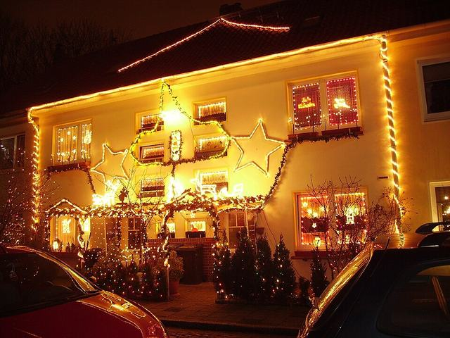
House decorated for Christmas.jpgPujanak · Public domainSource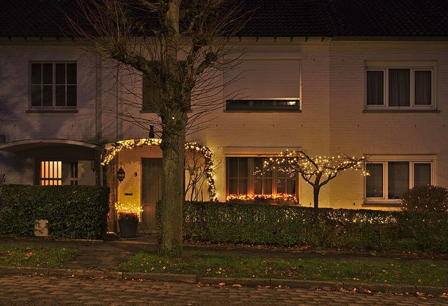
Christmas decorated house on Avenue Guillaume Van Nerom 9 in Auderghem, Belgium (civil twilight).jpgTrougnouf · CC BY 4.0Source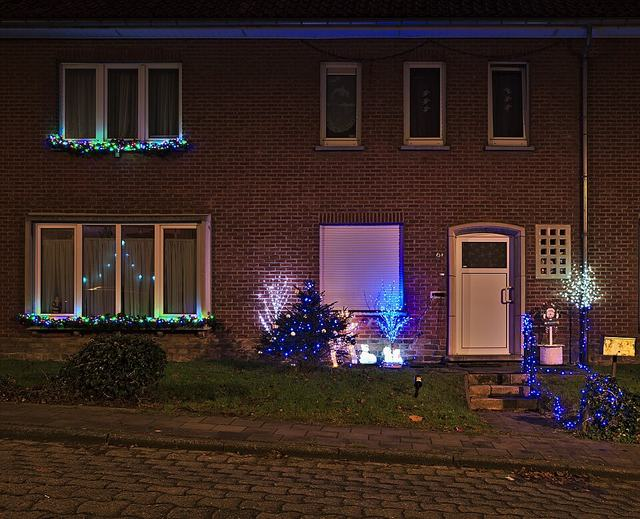
Christmas decorated house on Avenue Victor Moreau 45 in Auderghem, Belgium (civil twilight).jpgTrougnouf · CC BY 4.0Source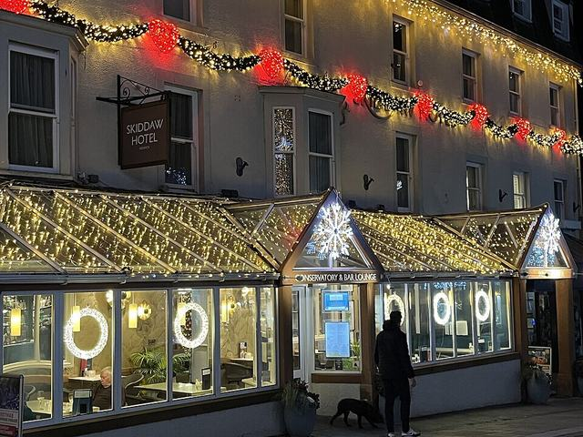
Skiddaw Hotel in Keswick decorated for Christmas - geograph.org.uk - 7932848.jpgJennifer Petrie · CC BY-SA 2.0Source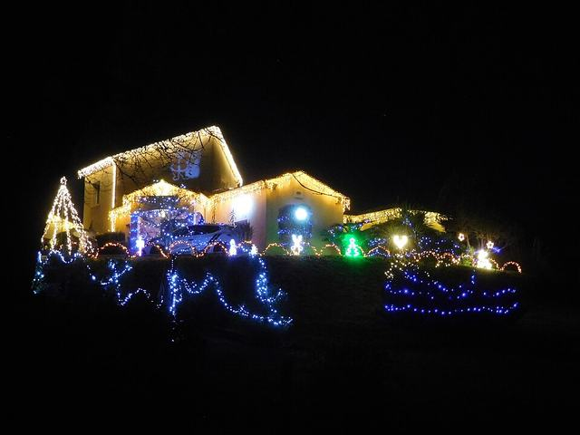
House decorated for Christmas, Dordogne (1).jpgCjp24 · CC BY-SA 4.0Source- Christmas wreath in Bristolheatheronhertravels · CC BY 2.0Source
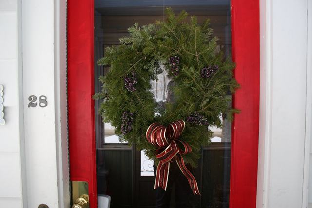
Christmas 08 003abbybatchelder · CC BY 2.0Source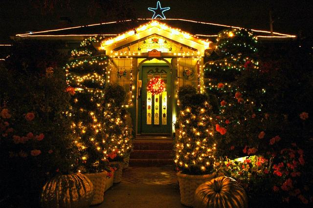
Pumpkins, fairy lights, flowers, topiary, blue star, wreath, front door, at entrance of the Mill Rose Inn, Half Moon Bay, California, USAWonderlane · CC BY 2.0Source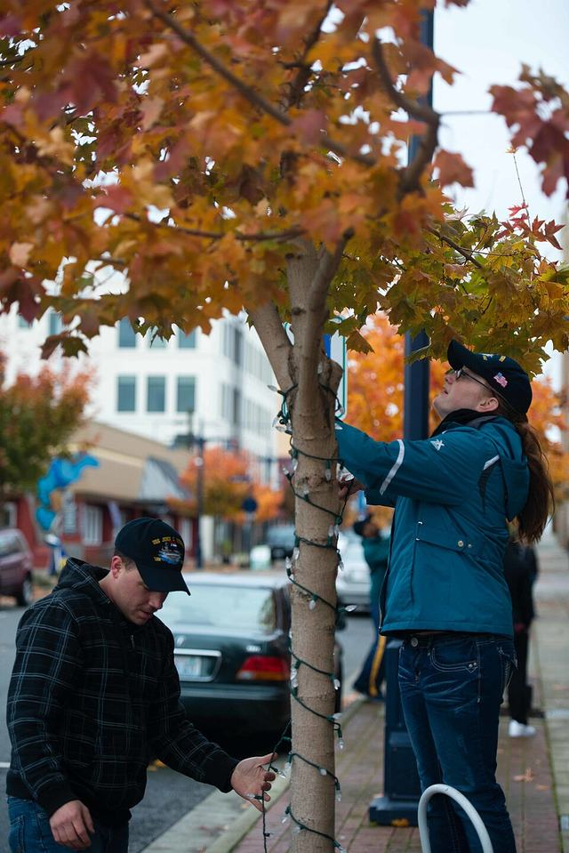
Stennis Sailors spread holiday cheer 141122-N-TC437-009.jpgPetty Officer 2nd Class ignacio perez · Public domainSource- European nettle tree (Celtis australis L.) wrapped with Christmas lights, Castelo Branco, Portugal julesvernex2.jpgJules Verne Times Two · CC BY-SA 4.0Source
- Christmas at Fire Station No. 2 131205-F-FN360-037.jpgAirman 1st Class Nathan Wilson-Crow · Public domainSource
- It's Beginning to Look A Lot Like Christmas! (6507951677).jpgRaniel Diaz · CC BY 2.0Source
- Applying drywall joint compoundGeorgia National Guard · CC BY 2.0Source
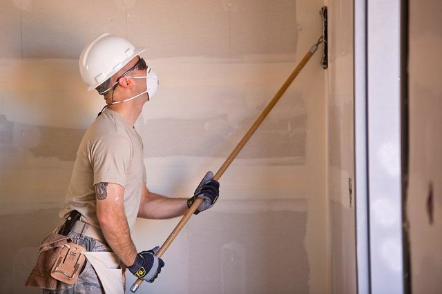
Sanding DrywallGeorgia National Guard · CC BY 2.0Source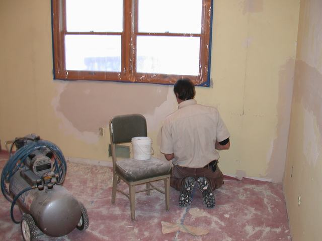
Drywall repair at hatchery quartersUSFWS Mountain Prairie · Public Domain Mark 1.0Source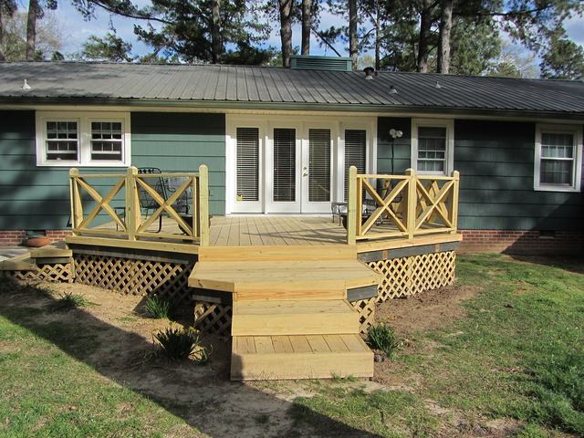
Deck Repair: AfterNatalieMaynor · CC BY 2.0Source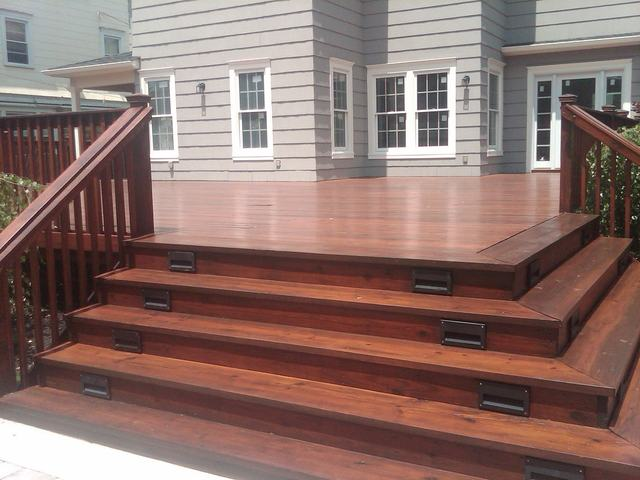
Deck Stain Maplewood NJOlgerFallasPainting · CC BY-SA 2.0Source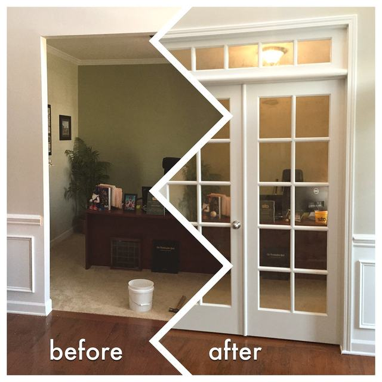
Office French Door Installationflattop341 · CC BY 2.0Source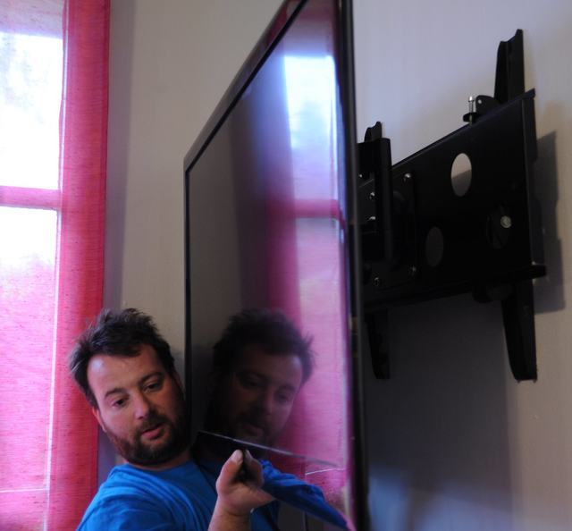
Electrician Stephen Klineburger mounting a flat screen TV on the wall, reflection, pink curtain, Broadview, Seattle, Washington, USAWonderlane · CC BY 2.0Source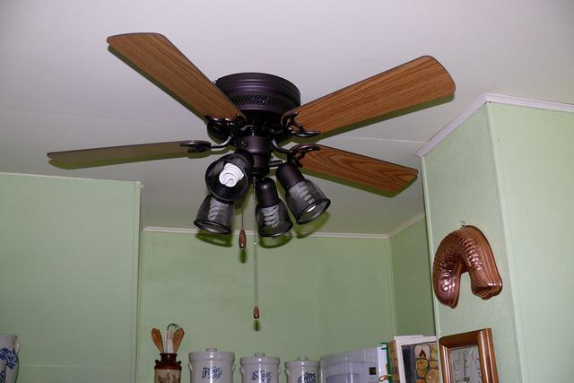
Kitchen ceiling fan.Larry Page · CC BY 2.0Source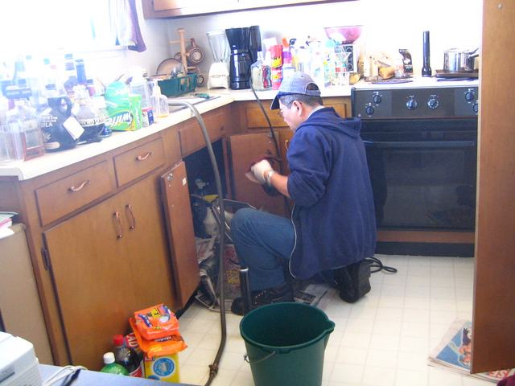
the plumberrick · CC BY 2.0Source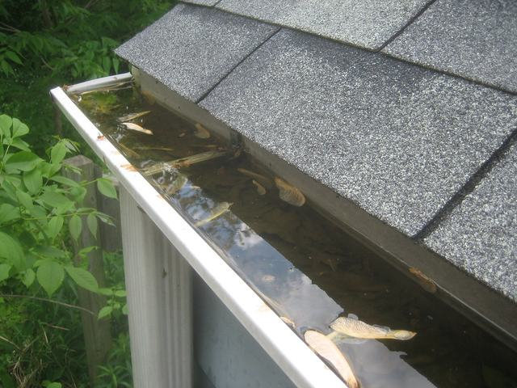
Gutter clogakeg · CC BY-SA 2.0Source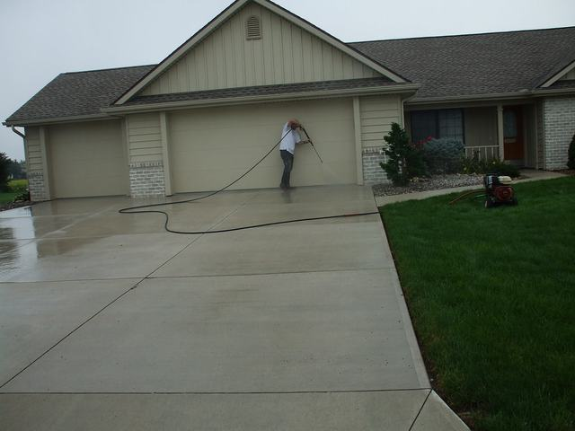
Pressure Washing Driveway - Lima OHDecorative Concrete Kingdom · CC BY 2.0Source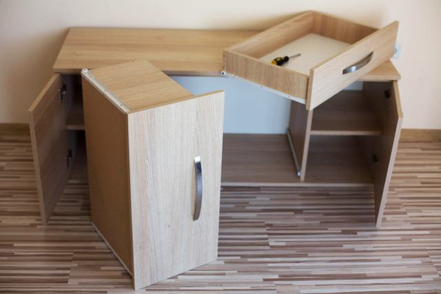
Furniture assemblyforrest.wheatey · CC BY-SA 2.0Source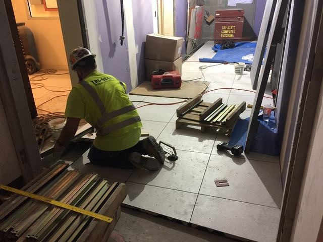
Floor tile installation in the back of house area of the LIRR passenger concourse. 08-29-2019MTA C&D - EAST SIDE ACCESS · CC BY 2.0Source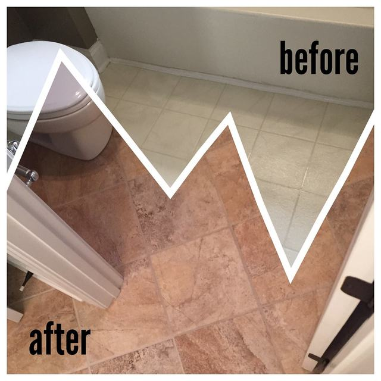
Bathroom Tile Installationflattop341 · CC BY 2.0Source- Handyman ToolsThe World is a Stage · CC0 1.0Source
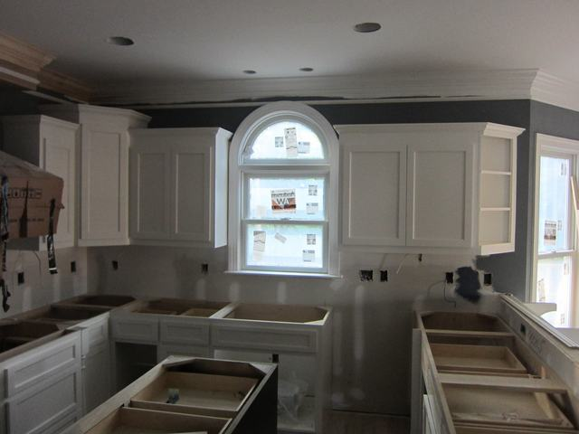
Cabinet doors installedjmrodri · CC BY 2.0Source